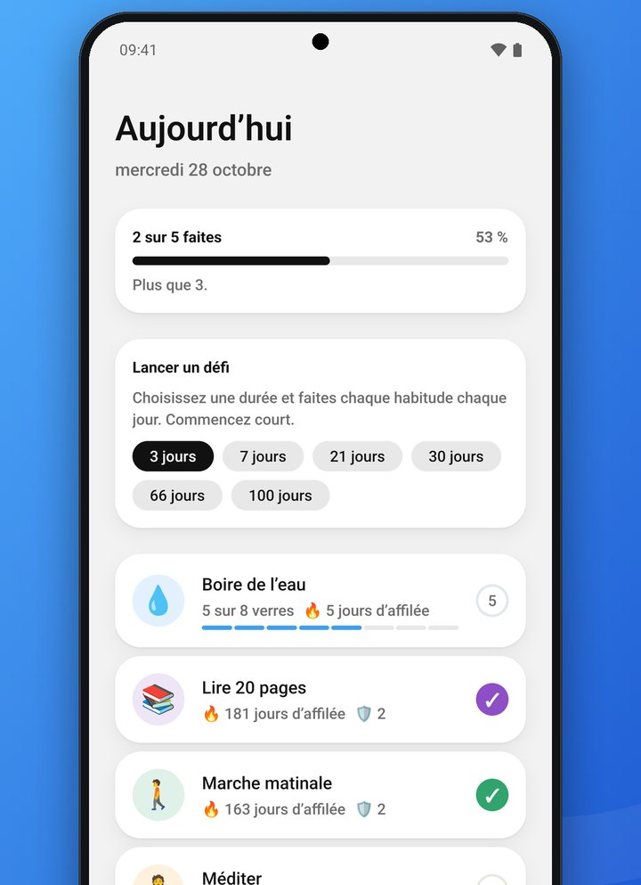
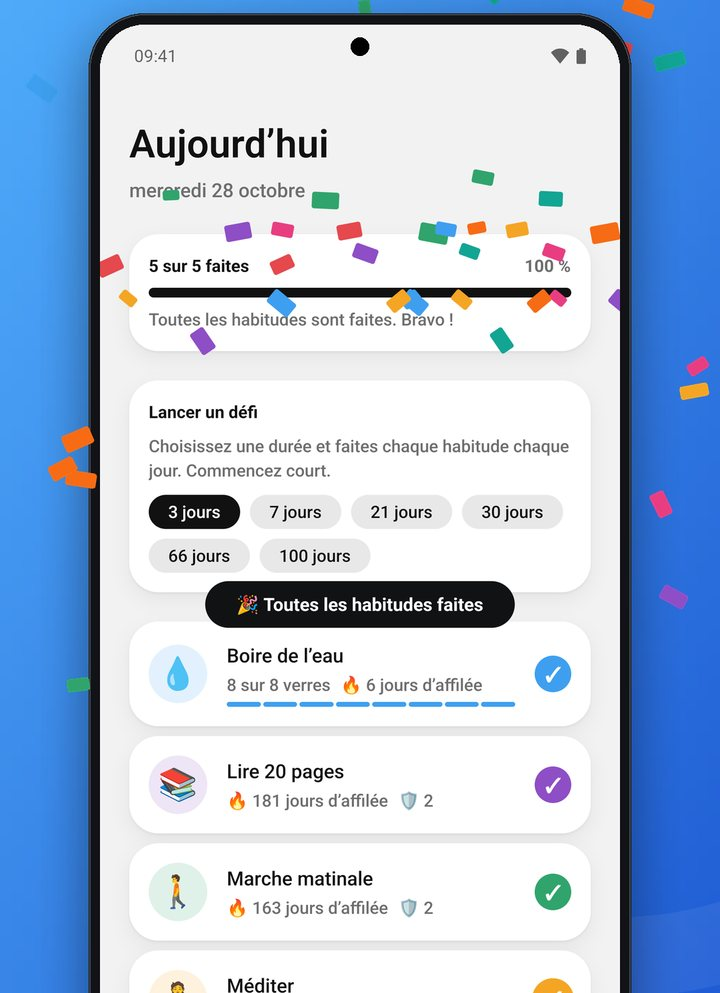
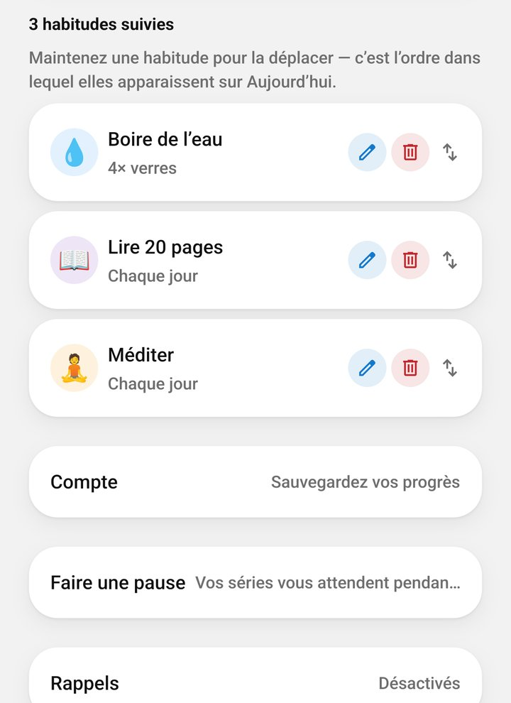
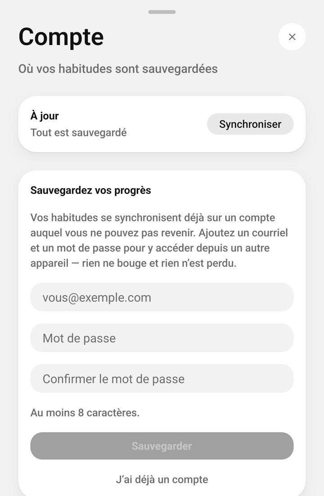
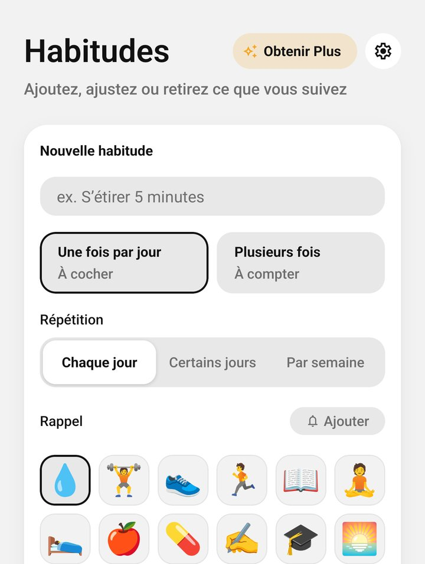

Tester Daily Ring sur Google Play
Merci de tester. Votre adresse est déjà sur la liste des testeurs : il ne reste que quatre étapes sur votre téléphone, puis quatorze jours d’utilisation.
- Environ 5 minutesDu lien à votre première habitude cochée
- Votre téléphone AndroidConnecté au compte Google que vous nous avez donné
- 14 joursRestez dans le test au moins ce temps ; c’est ce que Google demande
-
Utilisez le compte Google que vous nous avez donné
Seule l’adresse inscrite sur la liste des testeurs peut rejoindre le test. Ouvrez le Play Store, touchez votre photo de profil en haut et vérifiez qu’il s’agit du même compte Gmail ou Google. Sinon, touchez la flèche à côté et changez de compte.
Plusieurs comptes sur un même téléphone : c’est la raison la plus fréquente pour laquelle le test n’apparaît pas.
Touchez votre photo pour voir le compte actif -
Ouvrez le lien du test et devenez testeur
Sur votre téléphone, ouvrez le lien ci-dessous. Vérifiez qu’il s’ouvre avec ce même compte, puis touchez Devenir testeur. La page confirme ensuite que vous êtes testeur.
Le lien fonctionne aussi depuis le navigateur d’un ordinateur, connecté au même compte Google.
Un dessin simplifié de la page du test -
Installez-la depuis Google Play
Sur la même page, touchez le lien vers Google Play, ou utilisez le bouton ci-dessous. Daily Ring s’ouvre dans le Play Store : touchez Installer.
« Article introuvable » ? Votre inscription peut prendre quelques minutes à atteindre le Play Store. Patientez un peu, réessayez, et vérifiez le compte de l’étape 1.
La page de Daily Ring dans le Play Store -
Ouvrez Daily Ring et cochez une habitude
Aucune inscription. Daily Ring s’ouvre avec trois habitudes d’exemple que vous pouvez renommer, modifier ou supprimer. Touchez un anneau pour cocher une habitude aujourd’hui.
Ensuite : sauvegardez vos progrès, puis obtenez Plus à vie gratuitement.

L’onglet Aujourd’hui -
Gardez-la 14 jours
C’est l’étape la plus importante. Google n’accepte une nouvelle app sur le Play Store qu’une fois que suffisamment de testeurs sont restés dans son test fermé 14 jours d’affilée. Gardez Daily Ring installée et restez inscrit au moins aussi longtemps.
L’utiliser chaque jour aide encore plus : quelques habitudes cochées par jour, c’est un vrai test, et vous aurez droit aux confettis.

Une journée terminée
Sauvegardez vos progrès, puis obtenez Plus gratuitement
1Sauvegardez vos progrès → 2Plus à vie, gratuit
1Sauvegardez vos progrès

Habitudes → Compte 
Courriel, mot de passe ×2 → Sauvegarder Touchez Confirmer le courriel Sauvegardé
2Plus à vie, gratuit

Obtenir Plus 
À vie → Acheter Acheter · carte de test, 0 $ À vie · à vous pour de bon
Les prix affichés sont ceux de la boutique. En tant que testeur, vous ne payez rien.
Pendant vos tests
Les mises à jour passent par le Play Store
Les nouvelles versions de test arrivent comme des mises à jour ordinaires. Si les mises à jour automatiques sont activées dans le Play Store, vous n’avez rien à faire.
Envoyez vos commentaires
Utilisez le formulaire de contact pour tout ce qui semble étrange, cassé ou confus, et pour vos idées. Le modèle de votre appareil et votre version d’Android nous aident.
Plus est gratuit pour les testeurs
Votre achat passe par une carte de test Google Play : rien n’est facturé. Choisissez À vie.
Vos données sont conservées
La version de test est la vraie app. À sa sortie, Daily Ring vous arrivera simplement comme une mise à jour, avec vos habitudes et votre historique.
En cas de problème
Le lien dit que je ne peux pas participer, ou que l’app n’est pas disponible
Le lien n’est ouvert qu’aux adresses inscrites sur la liste des testeurs. Vérifiez le compte du navigateur qui l’a ouvert, ou ouvrez le lien dans une fenêtre privée et connectez-vous avec le bon. Si c’est bien le bon compte, dites-le-nous par le formulaire de contact pour que nous vérifiions la liste.
Je suis inscrit, mais le Play Store n’affiche toujours pas Daily Ring
Laissez-lui jusqu’à une heure, puis fermez et rouvrez le Play Store. La recherche peut ne pas la trouver pendant un test fermé : utilisez plutôt le bouton Google Play de l’étape 3.
Mon adresse n’est pas une adresse Gmail
Elle doit être celle d’un compte Google. N’importe quelle adresse peut l’être : créez un compte Google avec elle, ou envoyez-nous plutôt votre adresse Gmail.
Comment quitter le test ?
Rouvrez le lien du test et touchez Quitter le programme, puis désinstallez l’app. Si vous avez ajouté un courriel, supprimez d’abord le compte dans Habitudes → Compte → Supprimer le compte pour effacer ses données ; voici comment.
Quelque chose d’étrange, ou une idée ? Dites-le-nous. Chaque message est lu, et le test sert justement à cela.
Signaler un problème